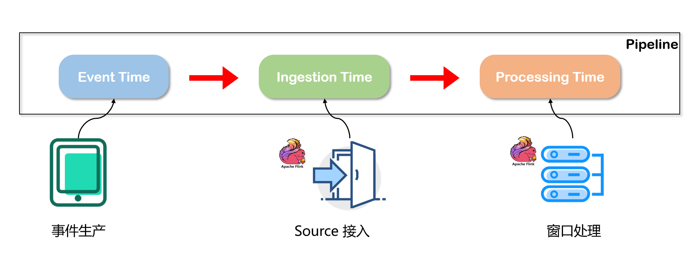
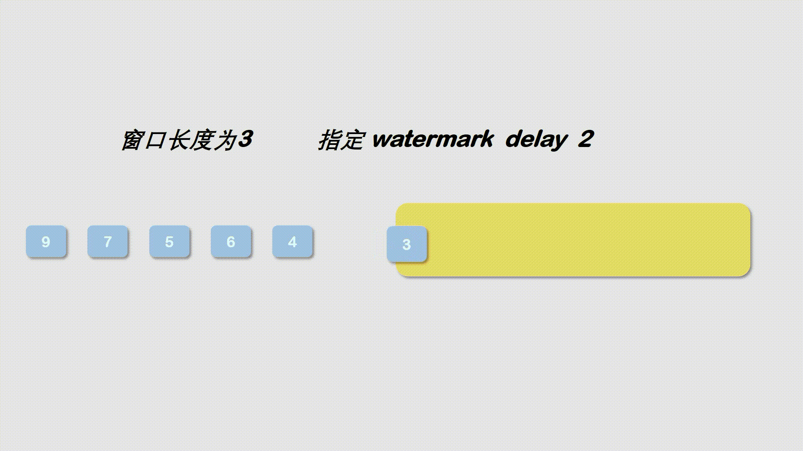
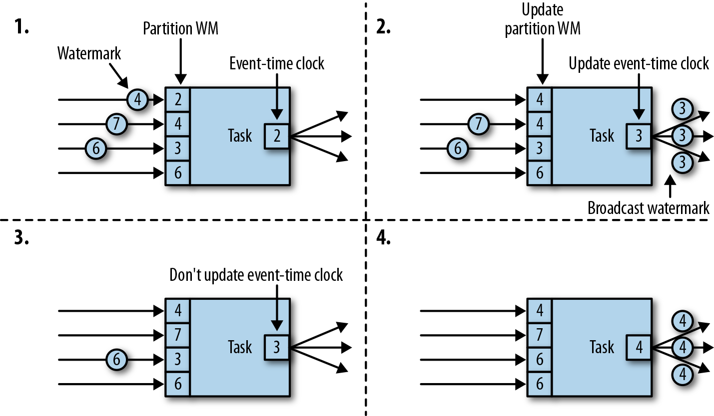

Ch11-Flink 之 Watermark
January 9, 2021
Flink 之 watermark
1. Flink 中的时间 #
在做实时计算的时候，首先就需要搞清楚一个问题，这个实时到底是怎么样的一个时间概念。在 Flink 中，总共有 3 种时间概念，分别是事件时间(Event time)，处理时间(Processing time)，接入时间(Ingestion time).

- 事件时间 (Event time) 就是真实的用户发生操作的时候所产生的时间，对应到 flink 中，需要用户显式的告诉 flink 到底每个输入中的哪一个字段代表这个事件时间。
- 接入时间 (Ingestion time) 和处理时间 (Processing time) 是不需要用户去指定的，flink 自己会去处理这个时间。接入时间的代表的是一个事件通过 source Operator 的时间，相比于 event time, ingestion time 不能处理乱序事件，因此也就不用生成对应的 watermark. 处理时间是指事件在操作算子计算过程中获取到的所在主机的时间。processing time 适合用于时间计算精度要求不是特别高的计算场景，例如统计某些延时非常高的日志数据。
2. watermark 分类 #
2.1 单分区 watermark #
watermark 这个概念在 flink 中是与 event time 这个时间概念相互依存的，其目的是为了解决数据乱序到达和系统延迟的问题。flink 会把读取进系统的最新事件时间减去固定的时间间隔作为 watermark。还是用一张图来解释 watermark 的作用。

当事件进入 flink 中的时候，根据提取的 event time 产生 watermark 时间戳，记为 X, 进入 flink 中的 event time 记为 Y. 当窗口的 end time < X 的时候，则触发窗口计算结果并输出。只要 X < end time, 那么 事件就可以 一直进入到当前窗口中，这样的话即便发生乱序，也可以在窗口中调整。调整的方法就是按照 Y.
用伪代码描述大概如下
if (x > windowEndtime) {
compute();
} else {
pushToWindow();
}
2.2 多分区 watermark #

具有两个或多个输入流（如 Union 或 CoFlatMap）的算子任务也会以所有分区 watermark 的最小值作为事件时间时钟。它们并不区分不同输入流的分区 watermark，所以两个输入流的数据都是基于相同的事件时间时钟进行处理的。
3. 使用 watermark #
3.1 在 Source Function 中 直接指定 Timestamps 和 Watermark #
DataStream<Tuple3<Long, String, Integer>> stream = env.addSource(
new SourceFunction<Tuple3<Long, String, Integer>>() {
@Override
public void run(SourceContext<Tuple3<Long, String, Integer>> ctx) throws Exception {
for (Tuple3<Long, String, Integer> item : list) {
long timestamp = item.f0;
ctx.collectWithTimestamp(item, timestamp);
ctx.emitWatermark(new Watermark(timestamp - 3));
}
}
@Override
public void cancel() {
}
}
);
3.2 通过 Flink 自带的 Timestamp Assigner 指定 Timestamp 和 生成 watermark #
3.2.1 BoundedOutOfOrdernessTimestampExtractor #
DataStream<Tuple3<Long, String, Integer>> stream = env.fromCollection(list)
.assignTimestampsAndWatermarks(
new BoundedOutOfOrdernessTimestampExtractor<Tuple3<Long, String, Integer>>(Time.seconds(3)) {
@Override
public long extractTimestamp(Tuple3<Long, String, Integer> element) {
return element.f0;
}
}
);
3.2.2 AscendingTimestampExtractor #
DataStream<Tuple3<Long, String, Integer>> stream = env.fromCollection(list)
.assignTimestampsAndWatermarks(
new AscendingTimestampExtractor<Tuple3<Long, String, Integer>>() {
@Override
public long extractAscendingTimestamp(Tuple3<Long, String, Integer> element) {
return element.f0;
}
}
);
3.2.3 自定义 Timestamp Assigner 和 Watermark Generator #
注意： 下述两种 watermark 在 Flink 1.11 中已经废弃
class BoundedOutOfOrdernessGenerator implements AssignerWithPeriodicWatermarks<Tuple3<Long, String, Integer>> {
private long maxOutOfOrderness;
private long currentMaxTimestamp;
BoundedOutOfOrdernessGenerator(long maxOutOfOrderness) {
this.maxOutOfOrderness = maxOutOfOrderness;
}
@Override
public long extractTimestamp(Tuple3<Long, String, Integer> element, long previousElementTimestamp) {
long timestamp = element.f0;
currentMaxTimestamp = Math.max(timestamp, currentMaxTimestamp);
return timestamp;
}
@Override
public Watermark getCurrentWatermark() {
// return the watermark as current highest timestamp minus the out-of-orderness bound
return new Watermark(currentMaxTimestamp - maxOutOfOrderness);
}
}
class PunctuatedAssigner implements AssignerWithPunctuatedWatermarks<Tuple3<Long, String, Integer>> {
@Nullable
@Override
public Watermark checkAndGetNextWatermark(Tuple3<Long, String, Integer> lastElement, long extractedTimestamp) {
return new Watermark(extractedTimestamp);
}
@Override
public long extractTimestamp(Tuple3<Long, String, Integer> element, long previousElementTimestamp) {
return element.f0;
}
}